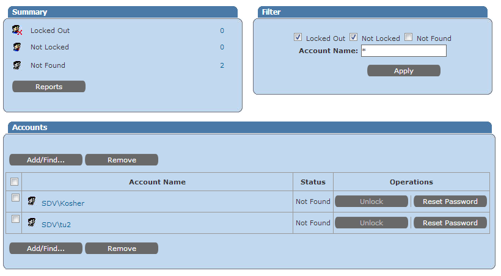

On the Helpdesk portal statuses of users changes from Not locked to
Not found and back after every page refresh.

Password Manager refreshes users` statuses every 30 seconds. Such behaviour could occur if LDAP request to AD returns that there are no users with such names. It could be related to an invalid domain name.
Password Manager refreshes users` statuses every 30 seconds. Such behaviour could occur if LDAP request to AD returns that there are no users with such names. It could be related to an invalid domain name.
- Go to Administrative portals - Domains,
- Click Edit the corresponding domain
- Make sure domain name is correct and is entered in UPPERCASE
- Click OK to save changes